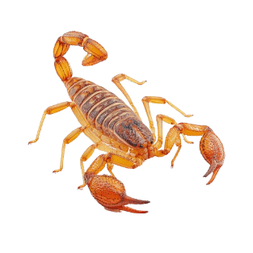
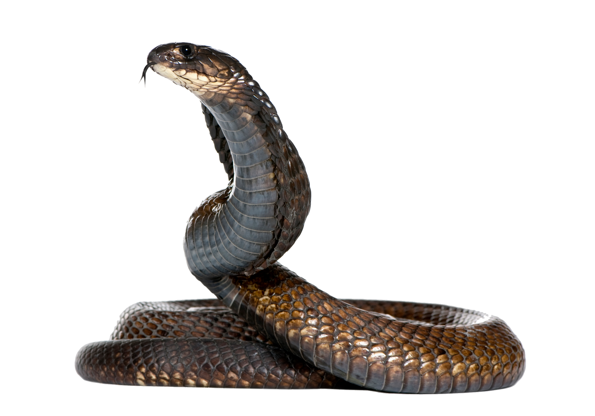
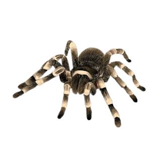
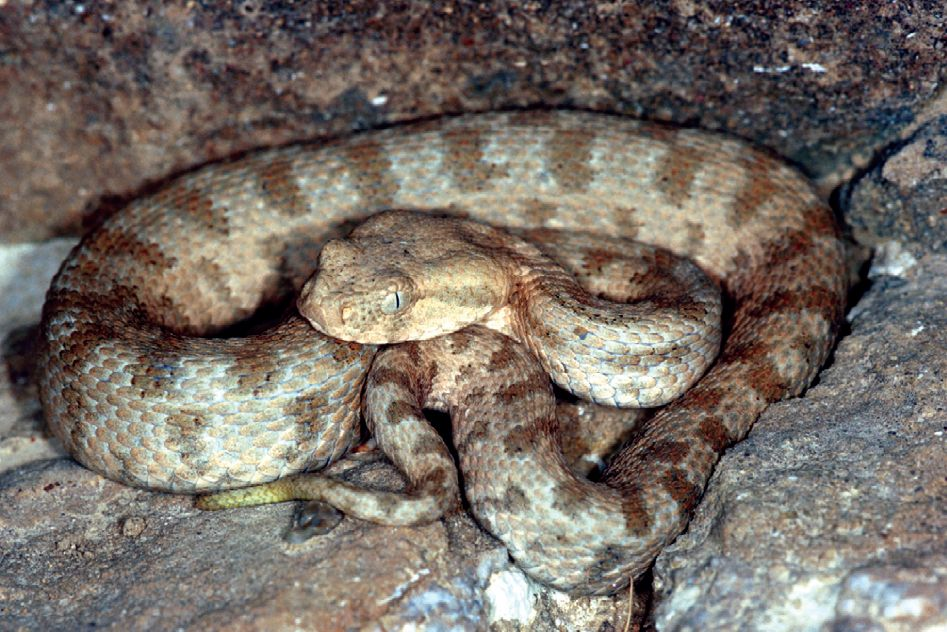

Բարև Ձեզ այսօր մենք կպատմենք հայկական թունավոր կենդանիների` օձերի, կարիճների և սարդերի մասին։ Նախագծի նպատակը այն է, որ դուք կարողանաք տարբերել թունավոր կենդանիներին, ոչ թունավորներից։ Տեղեկությունը կարդալուց հետո դուք կխաղաք մեր սարքած խաղը։ Նախագիծը կազմել են Սպարտակ Հայրապետյանը, Սարո Մխիթարյանը, Ալեքս Հովհանիսյանը և Մքայել Պայլանը։ Ծրագրի կոդավորմամբ զբաղվել է Սպարտակը, տեղեկությունը հավաքագրել է Ալեքսը, խաղի հարցերը պատրաստել է Միքայելը, իսկ նախագիծը պատրաստել է Սարոն։ Ծրագրից օգտվելու համար հարկավոր է սեղմել էկրանի վերևի աջ անկյունում առկա երեք ձողերին։

կարիճի մասին տեղեկություն

օձի մասին տեղեկություն

սարդի մասին տեղեկություն

Գյուրզա